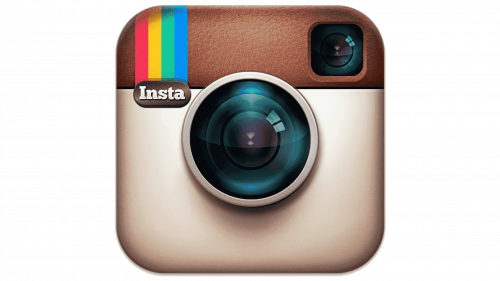
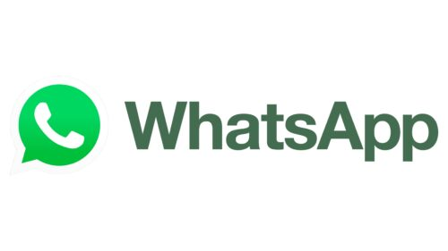

Mark Zuckerberg's Career
2003 - 2004
Zuckerberg mengembangkan Facemash ketika masih menjadi
mahasiswa Harvard. Setelah itu, ia bersama beberapa
rekannya mengembangkan TheFacebook sebagai platform
jejaring sosial untuk mahasiswa.


2004 - 2011
Facebook berkembang dari jejaring sosial mahasiswa
menjadi salah satu platform media sosial terbesar di
dunia. Zuckerberg kemudian menjadi CEO dan memimpin
perkembangan perusahaan tersebut.

2012
Facebook melakukan penawaran saham perdana atau IPO.
Pada tahun yang sama, Facebook juga mengakuisisi
Instagram, memperluas ekosistem perusahaan di bidang
media sosial.


2021 - Sekarang
Facebook berganti nama menjadi Meta Platforms.
Perusahaan kemudian memperluas fokusnya ke berbagai
bidang teknologi, termasuk kecerdasan buatan,
virtual reality, dan pengembangan platform sosial.